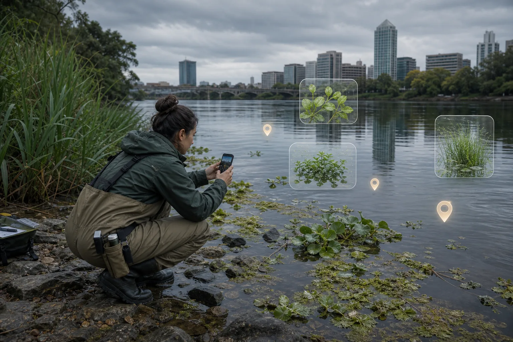
线索分散
普通用户会看到疑似外来物种，但缺少统一入口、规范字段和后续追踪。
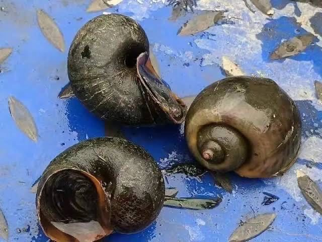
福寿螺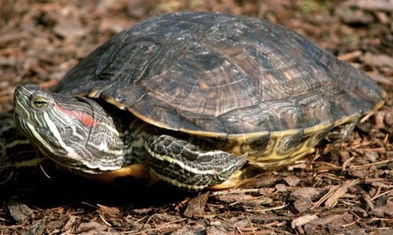
红耳龟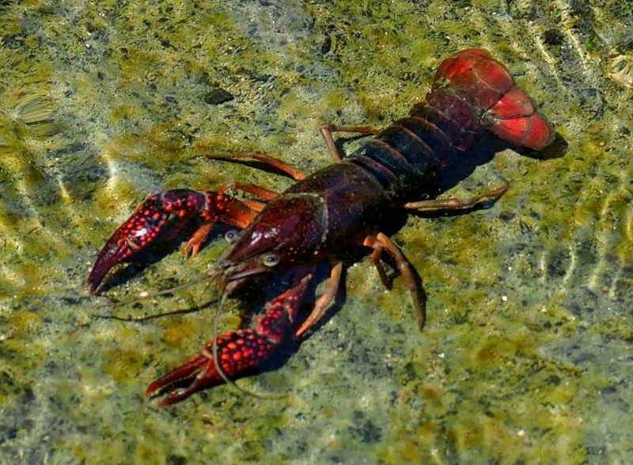
克氏原螯虾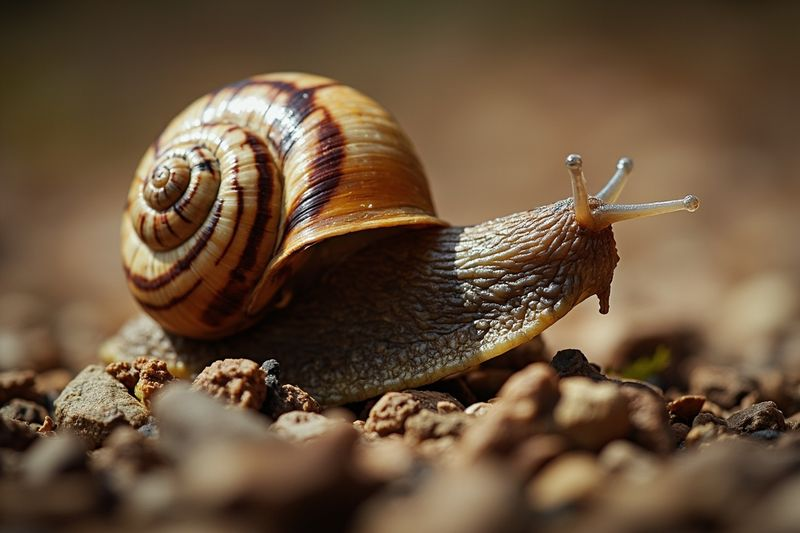
非洲大蜗牛外来入侵物种常在校园、公园、河道、农田边缘被偶然发现。系统的价值，是把这些零散线索结构化，并给审核、展示和运营留下清晰入口。

普通用户会看到疑似外来物种，但缺少统一入口、规范字段和后续追踪。
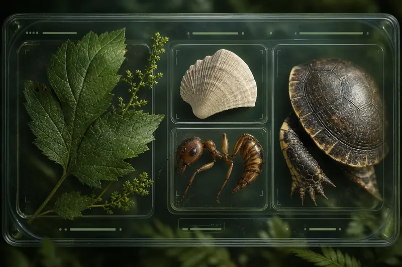
候选物种、风险等级、历史记录、分布趋势，需要被组织成可理解的参考。
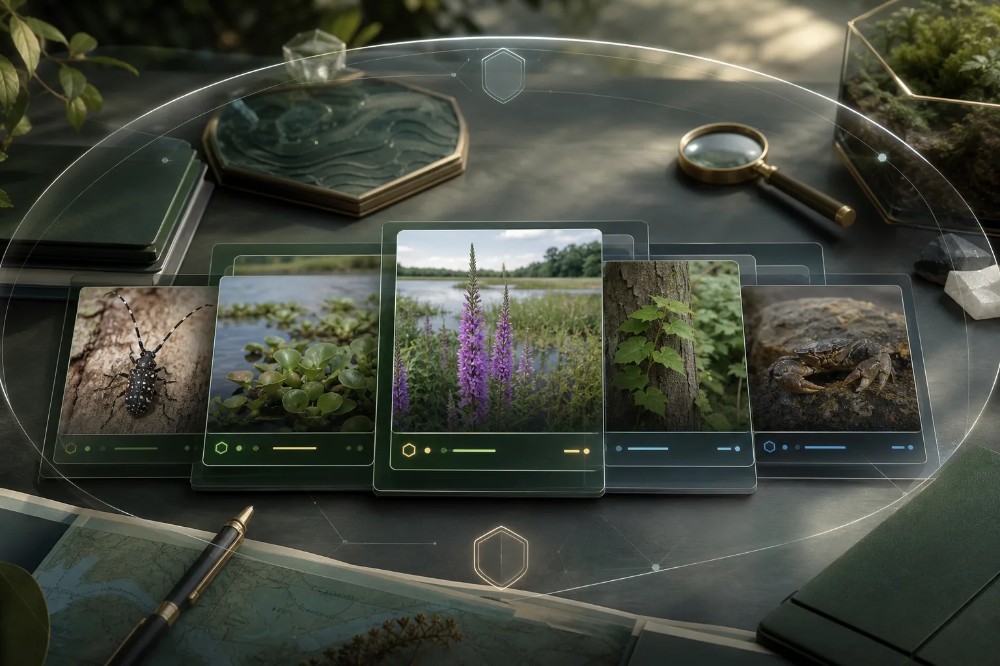
未经审核的记录不适合公开展示，需要 reviewer/admin 做最终确认。
用户在野外发现陌生植物或动物，上传图片并进入候选识别流程。
识别链给出候选物种，降低普通用户的判断门槛。
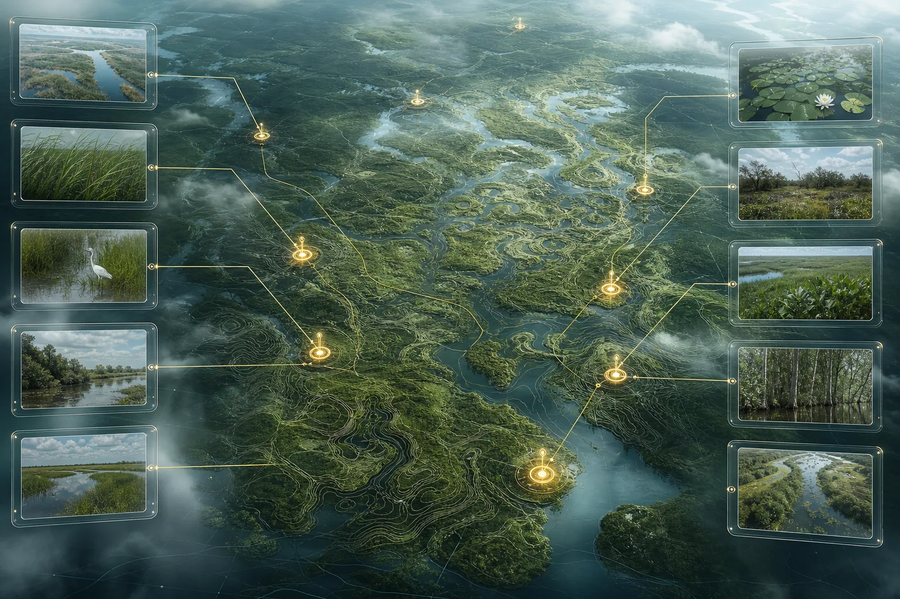
记录经纬度、地址、备注，形成可复核的空间线索。
审核员确认最终物种、写入审核备注，控制公开边界。
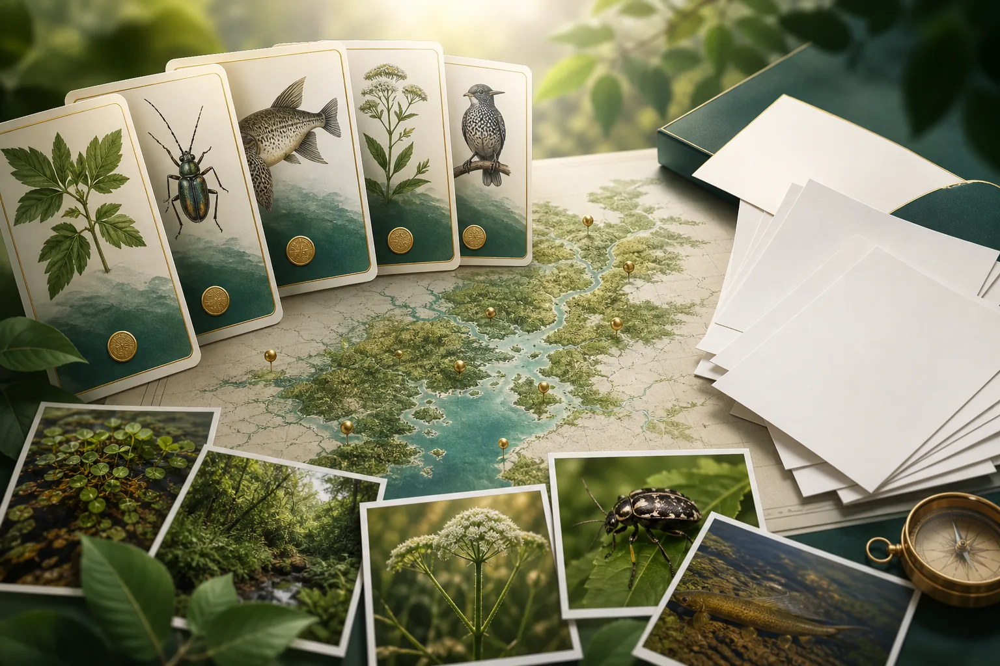
审核通过的记录进入公开地图与物种详情页，沉淀可信分布。
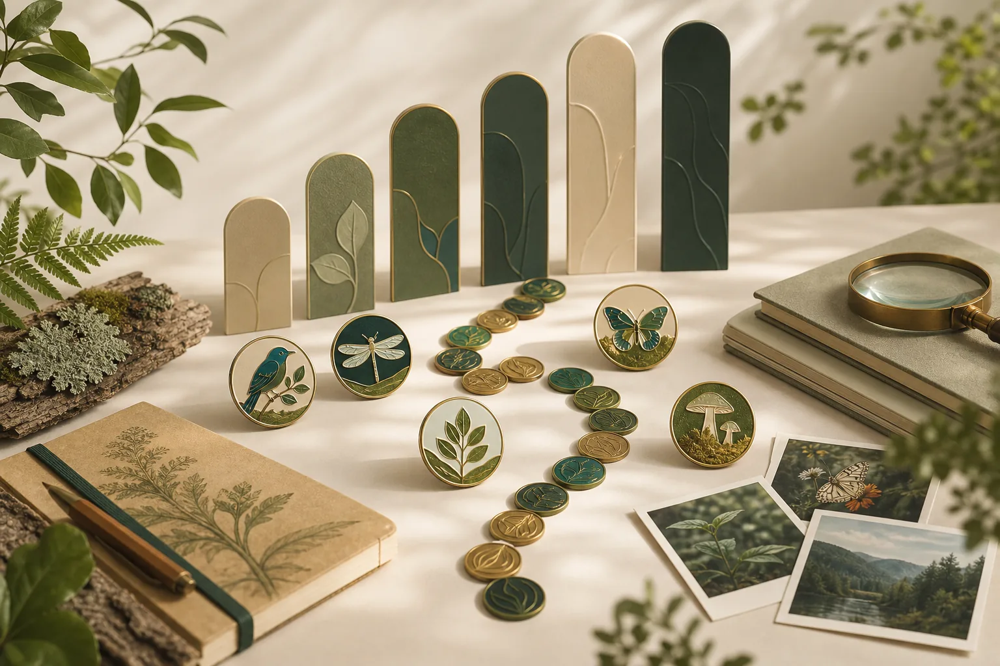
积分、徽章、排行榜和商城，把持续参与变成可感知反馈。
小程序包含首页、地图、上报、物种详情、审核台、个人中心、排行榜、商城、通知等 12+ 页面，前台采集和后台复核同时成立。
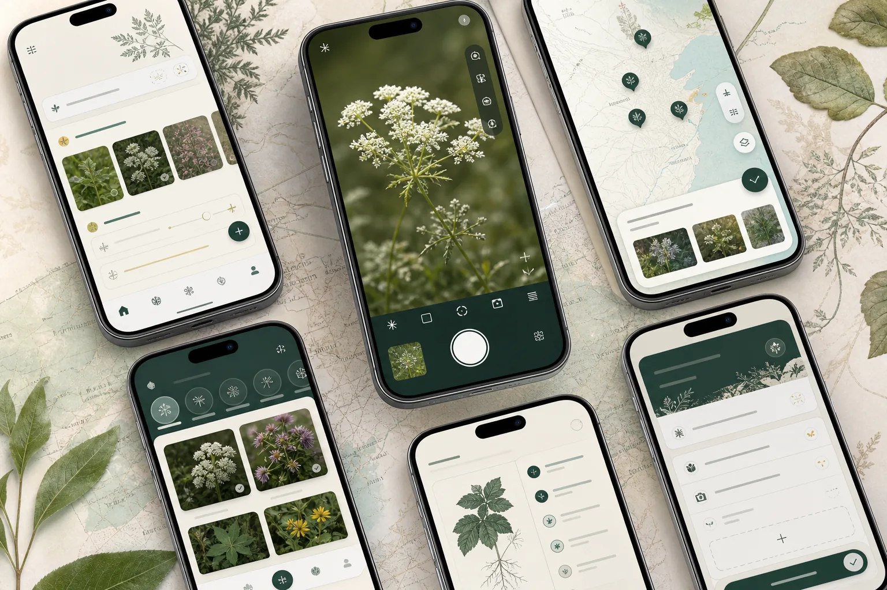
首页、地图、上报、物种详情，解决“看见 - 记录 - 理解”。
审核台、我的上报、已核实记录，解决“状态 - 复核 - 公开”。
排行榜、积分商城、个人中心、通知，解决“持续参与”。
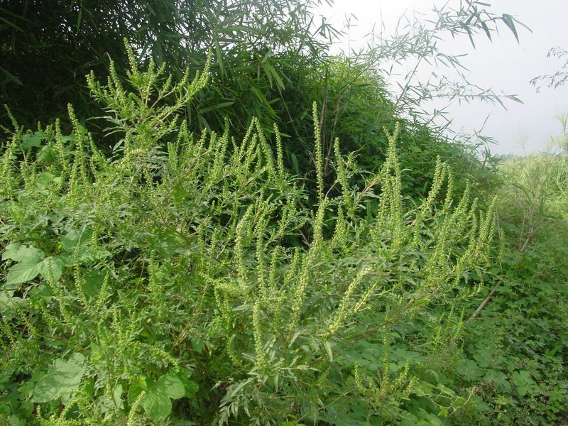
20 个物种含图片、风险等级、来源地、危害和防治建议。
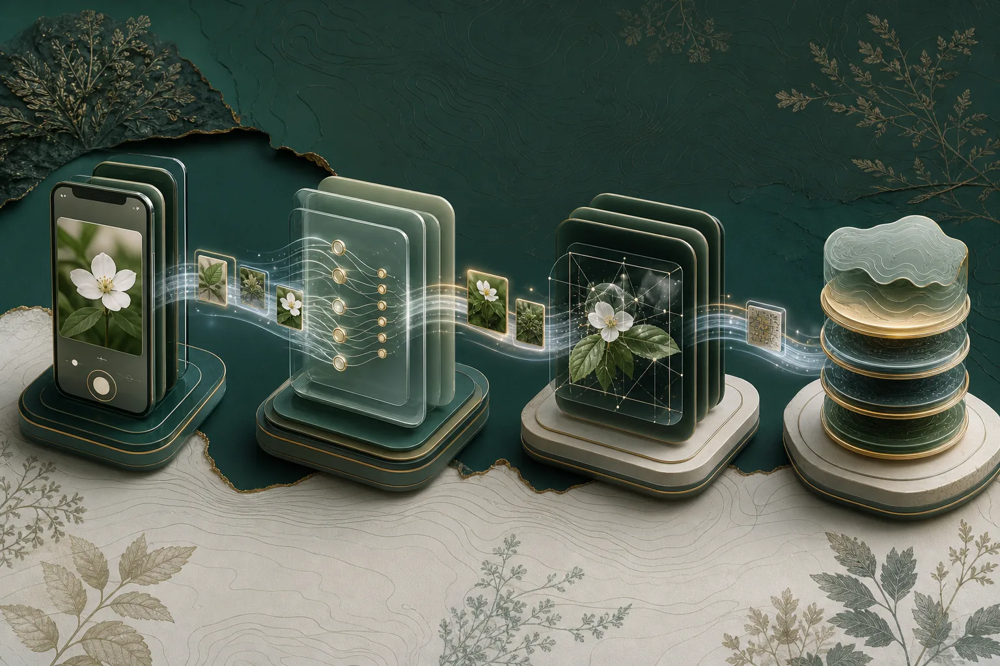
天敌、共生、扩散路径等关系字段，帮助理解生态关联。
expert 用户可导出已核实 CSV，用于课程实践或后续分析。
展示页不再只靠文字说明，而是把现场上报、候选识别、积分徽章和监测影像组织成一套视觉证据层。滚动时画面轻微视差，鼠标经过时卡片像标本台一样浮起。
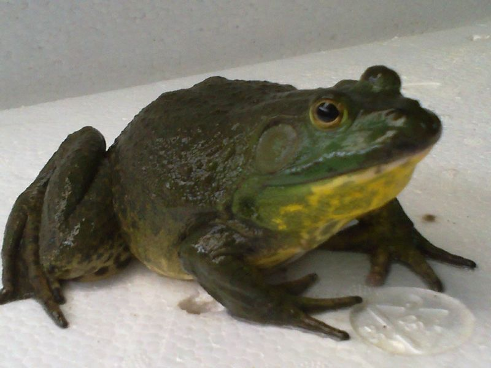
牛蛙 水域生态影响 · 影像线索 + 位置确认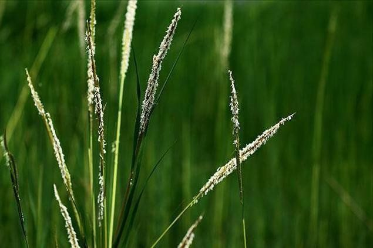
互花米草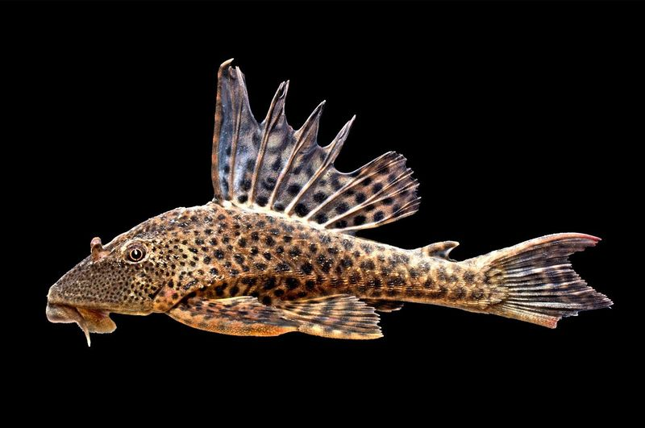
清道夫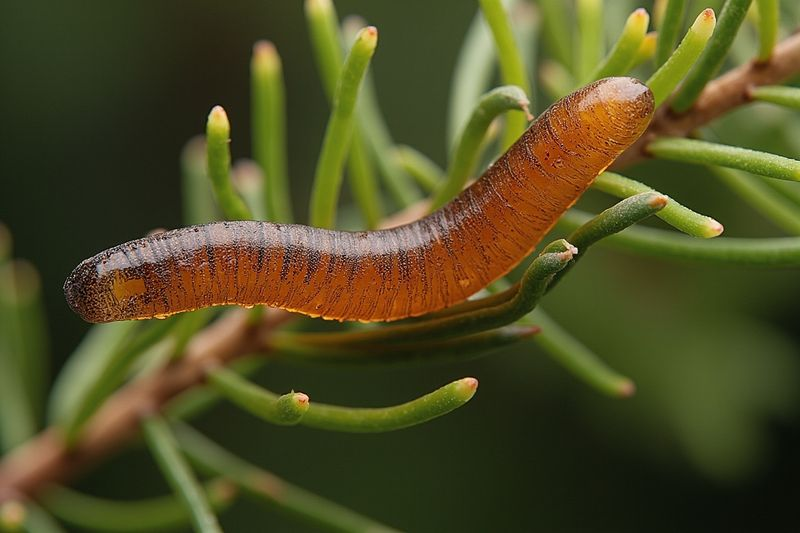
小龙虾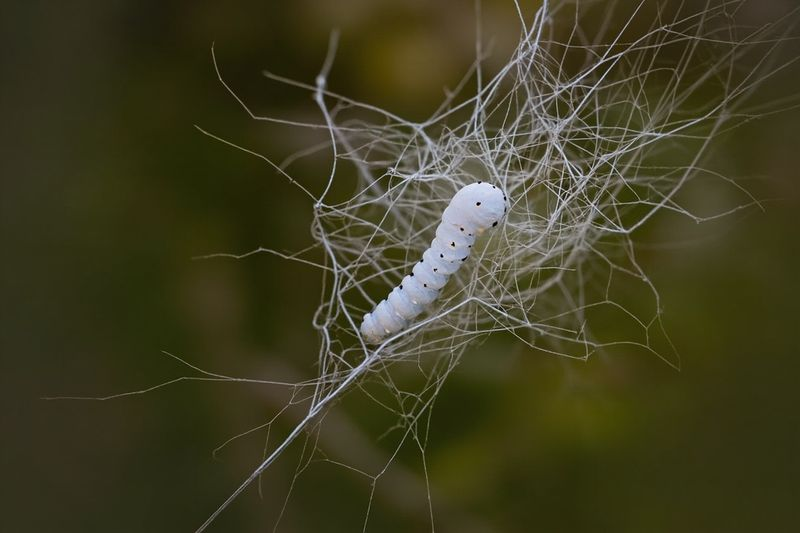
凤眼莲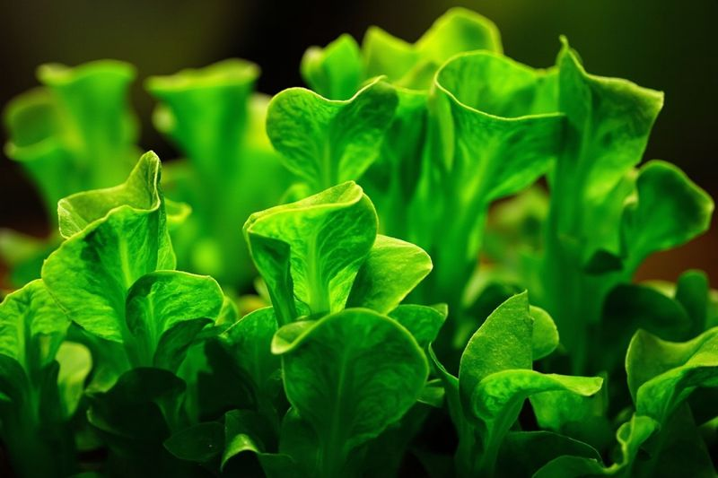
飞机草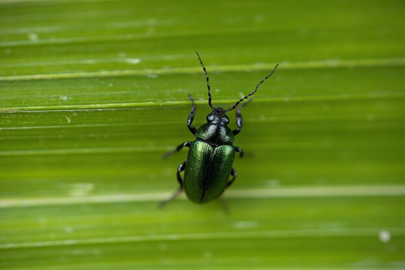
毒麦系统把“谁发现、在哪里、疑似什么、最终确认什么”连接起来，形成可浏览、可导出、可继续分析的生态数据资产。
公开展示只接收审核通过记录。
系统用图片去重、地理时空去重、积分门槛和 JWT 权限保护，保证“可参与”不牺牲“可信”。
同一图片 7 天内不可重复上报，作为基础防线挡住最直接的重复提交。
200m 半径 + 12 小时内同区域去重，降低刷分和密集重复记录。
JWT 保护私有接口；跨用户订单、通知、积分访问返回 403；积分过低禁止提交。
原生微信小程序 + Node.js/Express + SQLite，配合上传校验、识别任务、审核状态、积分结算和测试覆盖，构成一个闭环项目。
这个项目最有价值的部分，是把拍照识别、GPS 上报、人工审核、公开展示、积分运营和安全边界放进同一个系统表达里。